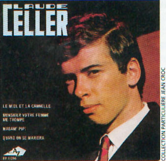
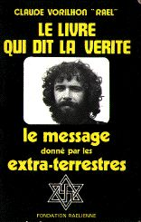
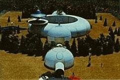
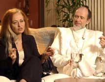

Vorilhon naît le à Vichy (03). Il est élevé par sa tante et sa
grand-mère, à Ambert (63). En , il rend visite à un druide qui
l'impressionne beaucoup. Il fréquente un pensionnat catholique à Le Puy, avec des résultats médiocres : passionné de
vitesse et de courses automobiles, il préfère lire les revues consacrées à ce sport, plutôt que ses livres scolaires.
Il provoque un scandale dans le pensionnat catholique en participant à la communion sans être baptisé. Dans certaines
matières, en rédaction et en poésie, il est un élève brillant. Ses parents le retirent du pensionnat pour le mettre à
l'école d'Ambert. Les résultats ne sont guère meilleurs, surtout qu'il y fait bien souvent l'école buissonnière.
Chanson
Le disque de "Claude Celler", le "petit Brel" déjà clône... de son idôle

Vorilhon se passionne pour la guitare. En , il quitte le centre de la France pour se rendre à
Paris en auto-stop. Il y fait la manche, chante aux terrasses de cafés. A 18 ans, il obtient son permis de conduire.
Il réalise 2 disques sous le pseudonyme de Claude Celler (il voulait des initiales doubles, et avait une
grande admiration pour Tony Celler, un grand skieur et un champion automobile). Il veut faire la même parcours que
Brel, et passe dans tous les cabarets où il s'est produit. Après des années de vache enragée, il entre chez Disc'AZ
avec Lucien Morris, où il fait 6 disques, dont Le Miel et la Canelle. Cependant, en ,
son producteur se suicide et la carrière de Claude Celler s'arrête là.
Automobile
Coureur automobile, il sort indemne de plusieurs accidents de voiture. Peu après son mariage, il s'installe à
Clermont-Ferrand, et devient chroniqueur sportif spécialisé dans le domaine automobile.
La revue fait faillite, mais il crée Auto pop, sa propre revue dans la région. Il raconte :
Je n'avais pas vraiment le feu sacré pour la chanson, mais je m'étais dit voilà un bon moyen de gagner de
l'argent pour faire des courses automobiles, car ça a toujours été mon rêve, depuis l'âge de 9 ans, de devenir
champion du monde de Formule 1 Le vrai papier
Journal, 2001-12.
Cependant en , Pierre Messmer, fraîchement élu 1er ministre, annonce une série de mesures
draconiennes sur la limitation de vitesse sur route et la suspension de toutes compétitions et rallyes. Mauvais coup
pour la passion de Vorilhon, qui va annoncer avoir rencontré des extraterrestre, 13 jours plus tard.
Contact
Le 1er livre de Vorilhon

Le , dans l'un des cratères de la chaîne des volcans éteints proches du Puy de Dôme, il
aurait été contacté par un représentant d'extraterrestres s'appelant Elohims. L'être aurait mesuré 1,20 m, aurait eu
de longs cheveux noirs, des yeux en amande et une peau au tein olivâtre. Il aurait déclaré à Vorilhon :
Nous sommes ceux qui ont créé la vie sur Terre,
vous nous avez pris pour des dieux; nous sommes à l'origine de vos principales religions. Maintenant que vous êtes
suffisamment avancés pour comprendre cela, nous souhaiterions établir un contact officiel avec vous par le biais
d'une ambassade.
Par la suite Vorilhon emmène régulièrement de petits groupes d'adeptes (dont la chanteuse Stone) sur le lieu
déclaré de sa rencontre, sans autre manifestation. Mais c'est véritablement une émission de Jacques Chancel qui va
révéler Vorilhon, qui raconte son histoire. Le lendemain Vorilhon téléphone à Chancel pour lui dire quel engouement
à provoqué cette diffusion, et qu'il croule sous les demandes de membres.
Mouvement raélien
Maquette du projet "d'ambassade" de Vorilhon, présentée à la presse en

Suite à cela Vorilhon écrit le livre qui dit la vérité, comme il le qualifie lui-même, et fonde le Mouvement
Raélien en , déclarant vouloir construire cette ambassade. Le mouvement gagne en notoriété et
Vorilhon, qui se fait maintenant appeler "Rael" ("l'homme qui apporte la lumière"), sort un 1er livre
Vorilhon, Claude "Rael": Le livre qui dit la vérité - Le message donné par les
extraterrestres (Brantome, l'édition du Message, 1974) - Demande de l'ambassade. Il arbore
un insigne qui comprend une svastika — plus connue sous le nom de "croix gammée" — inscrite dans
une étoile de David.
Voyage spatial
Le il aurait été à nouveau contacté à Brantôme, puis emmené
par ces extraterrestres à bord de leur vaisseau spatial pour aller visiter leur planète d'origine. Il racontera y
avoir rencontré Bouddha, Moïse, Mahomet et
Jésus (qu'il dit être son frère), maintenus en vie scientifiquement en
attendant de revenir un jour sur Terre. En , il publie un 2ème livre Vorilhon, Claude "Rael": Les extraterrestres qui m'ont emmené sur leur
planète - Le 2ème message, Brantome, l'édition du Message, 1977.
S'estimant persécuté en France, il émigre au Canada.
En , il donne son 1er stage de méditation sensuelleRaël: La méditation sensuelle (Vaduz, Fondation Raëlienne, 1980
à Chénéville (Québec) indiquant que la démocratie est dépassée, et où seule une élite
dirige et est autorisée à prendre les décisions Vorilhon, Claude: La
géniocratie, 1978. Cette année-là il délivre d'autres messages "reçus", notamment la
destruction de l'humanité par une guerre atomique mondiale. Mais, avant cette catastrophe finale, les
extra-terrestres interviendront pour sauver certains êtres (quelques centaines d'élus), comme les non-violents,
par exemple. La mission actuelle pour Vorilhon et ses disciples serait de construire une ambassade destinée à
accueillir les extra-terrestres, soit à Jérusalem ou ailleurs en lsraël Raël: Accueillir les extra-terrestres, Vaduz, Fondation Raëlienne, 1979.
En , il perd un un procès en diffamation contre Jean-Yves
Casgha. Cette même année, suite aux remarques sur son insigne rappelant le symbole nazi, il en remplace la svastika
par un symbole moins équivoque. En il est reconnu comme une religion par le gouvernement du
Québec.
Secte
Vorilhon profitant de sa passion en 1995 grâce aux "dons" de ses membres
En le Mouvement Raélien Français est répertorié officiellement comme une secte par le rapport
de l'assemblée nationale AS
1996.
Clonâge
Boisselier et Vorilhon 
En est fondé Clonaid, une société ayant pour
but le clônage humain, branche de Valiant Venture Ltd (domiciliée
aux Bahamas et créée par Vorilhon et un groupe d'investisseurs) et dirigée par Brigitte Boisselier, chimiste
de 46 ans et "évêque" raélienne. Le celle-ci annonce que la société a réalisé son premier
clônage humain, mais on ne verra jamais l'enfant en question.
Cette année-là, Vorilhon fonde également UFOland, qui ouvre ses
portes au public le 26 août près de Valcourt (Canada).
Ce 1er centre d'interprétation du phénomène extraterrestre au monde, comme il est présenté (et
accessoirement le plus grand bâtiment au monde construit en bottes de pailles), comporte la plus grande
réplique au monde d'une chaîne d'ADN (26 pieds de hauteur) et une réplique grandeur nature de la soucoupe dans
laquelle Vorilhon dit avoir voyagé vers la planète des Elohim.
UFOland ferme en .